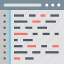

Lê uma ou mais variáveis definida na memória a partir da consola. A instrução também permite definir novas variáveis para a memória e cujo valor é inicializado pela consola.
É também possível definir uma mensagem para ser apresentada quando o valor for pedido.
Lê uma ou mais variáveis definida na memória a partir da consola. A instrução também permite definir novas variáveis para a memória e cujo valor é inicializado pela consola.
É também possível definir uma mensagem para ser apresentada quando o valor for pedido.
Sintaxe
Ler[<Tipo>]<var>[,<var>...][<mensagem>]
<TIPO> – Tipo de dados (inteiro | real | logico | texto) [Opcional] • – Nome da variável definida ou a definir em memória. O nome da variável deve seguir as seguintes regras:
<var>
o Não pode ser uma palavra reservada
o Tem de começar por uma letra (a-z; A-Z)
o Pode conter dígitos (0-9)
o Deve ser significativo daquilo que armazena
[<mensagem>] – mensagem a ser apresentada antes da leitura das variáveis [Opcional]
Exemplos
Ler a frase "Hello World"
ler "Hello World"
Ler uma variavel de texto(omissão do tipo)
ler texto txt = "Algorithmi"
ler txt
Programas
 Example 1 – Ler variáveis